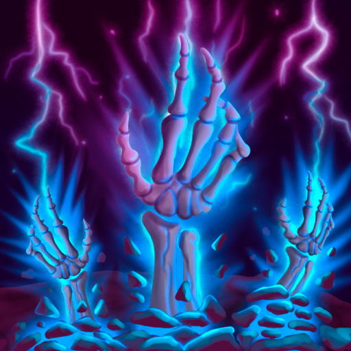

Différents ingrédients de monstres et/ou récolte peuvent désormais être combinés pour créer des plats plus variés (la cuisine sera désormais gérée manuellement).
Le système de récolte a été repensé pour être plus avantageux pour les joueurs.
La musique n'est plus mise en pause lors d'un appel de préparation.
Classes

Nécromancien
Le rayon des sorts Bombes a été agrandi : 3m → 4.5m.
Shogun
Le Shogun peut désormais sélectionner si il consomme son Action ou son Action bonus avant une attaque à l'arme.
Problèmes connus
Le bug de récolte de la session 2 est toujours présent et je n'ai pas réussi à le reproduire.

 Patch 1.0 – Session 3
Patch 1.0 – Session 3 Système
Système
 Différents ingrédients de monstres et/ou récolte peuvent désormais être combinés pour créer des plats plus variés (la cuisine sera désormais gérée manuellement).
Différents ingrédients de monstres et/ou récolte peuvent désormais être combinés pour créer des plats plus variés (la cuisine sera désormais gérée manuellement). Shogun
Shogun